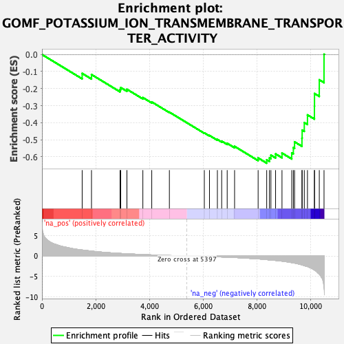
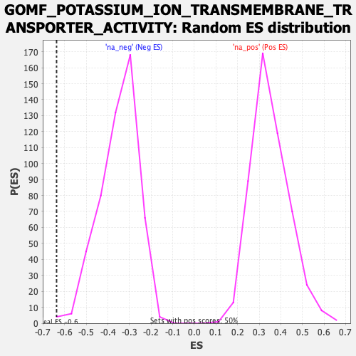

| Dataset | qlf.KOd4vsWTd4_gsea_score |
| Phenotype | NoPhenotypeAvailable |
| Upregulated in class | na_neg |
| GeneSet | GOMF_POTASSIUM_ION_TRANSMEMBRANE_TRANSPORTER_ACTIVITY |
| Enrichment Score (ES) | -0.637422 |
| Normalized Enrichment Score (NES) | -1.8231142 |
| Nominal p-value | 0.003960396 |
| FDR q-value | 0.037990034 |
| FWER p-Value | 0.875 |

| SYMBOL | RANK IN GENE LIST | RANK METRIC SCORE | RUNNING ES | CORE ENRICHMENT | |
|---|---|---|---|---|---|
| 1 | TMEM38B | 1496 | 1.457 | -0.1108 | No |
| 2 | ATP1A1 | 1843 | 1.190 | -0.1177 | No |
| 3 | KCNQ5 | 2906 | 0.625 | -0.2053 | No |
| 4 | KCNK6 | 2930 | 0.619 | -0.1939 | No |
| 5 | SLC9A6 | 3161 | 0.538 | -0.2041 | No |
| 6 | SLC12A2 | 3754 | 0.355 | -0.2528 | No |
| 7 | FXYD4 | 4085 | 0.267 | -0.2784 | No |
| 8 | SLC9A7 | 4741 | 0.116 | -0.3384 | No |
| 9 | KCNMB4 | 6041 | -0.104 | -0.4601 | No |
| 10 | KCNMB1 | 6233 | -0.142 | -0.4752 | No |
| 11 | TMEM175 | 6527 | -0.206 | -0.4986 | No |
| 12 | KCNIP2 | 6687 | -0.247 | -0.5084 | No |
| 13 | CCDC51 | 6892 | -0.299 | -0.5213 | No |
| 14 | KCNK5 | 7167 | -0.376 | -0.5392 | No |
| 15 | GRIK5 | 8043 | -0.712 | -0.6071 | No |
| 16 | KCNN4 | 8362 | -0.879 | -0.6181 | Yes |
| 17 | SLC9A8 | 8464 | -0.948 | -0.6069 | Yes |
| 18 | SLC9A1 | 8519 | -0.979 | -0.5906 | Yes |
| 19 | KCNA3 | 8692 | -1.083 | -0.5833 | Yes |
| 20 | KCNB1 | 8931 | -1.258 | -0.5784 | Yes |
| 21 | SLC12A4 | 9294 | -1.612 | -0.5775 | Yes |
| 22 | KCNAB2 | 9354 | -1.678 | -0.5463 | Yes |
| 23 | KCNH2 | 9399 | -1.729 | -0.5126 | Yes |
| 24 | ATP1B1 | 9674 | -2.171 | -0.4911 | Yes |
| 25 | SLC12A8 | 9681 | -2.189 | -0.4436 | Yes |
| 26 | SLC12A9 | 9761 | -2.352 | -0.3995 | Yes |
| 27 | SLC12A6 | 9879 | -2.569 | -0.3543 | Yes |
| 28 | ATP1A3 | 10138 | -3.411 | -0.3041 | Yes |
| 29 | KCNA2 | 10141 | -3.429 | -0.2290 | Yes |
| 30 | SLC12A7 | 10319 | -4.441 | -0.1484 | Yes |
| 31 | SLC9A9 | 10495 | -7.580 | 0.0012 | Yes |
